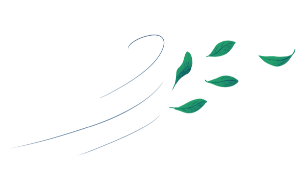

1 · Fyzika
Roste koncentrace CO₂ pomaleji než dřív?
…

Cesta na polovinuIPCC AR6: fosilní CO₂ o 48 % níž v roce 2030 a téměř nula v roce 2050, obojí oproti roku 2019. Stránka ukazuje, co říkají data a odkud jsou. Aktualizace každé pondělí.
Měsíční průměr a sezónně očištěná hodnota, ppm
ppm za rok (1. 1. až 31. 12.) a klouzavý průměr za 5 let
Gt CO₂ za rok, fosilní paliva a průmysl (bez změn využití půdy). Šedě trajektorie IPCC AR6 C1 pro CO₂: −48 % v 2030, −99 % v 2050 oproti 2019.
Územní fosilní CO₂ podle Global Carbon Budget. Odchylka = o kolik jsou emise v posledním roce nad (+) nebo pod (−) vlastní trajektorií z roku 2019. Klikni na název sloupce pro definici.
| Hráč | Stav | Odchylka od trajektorie |
Tempo 5 let / rok |
Potřebné tempo / rok |
Emise Mt CO₂ |
t CO₂ na obyv. |
Změna vs. 2019 |
Změna vs. vrchol |
1990 až 2030 šedě trajektorie |
|---|